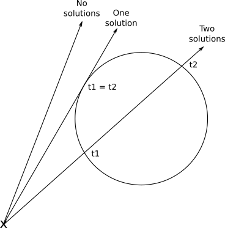

Isın ve Kürenin Kesişimini Matematiksel Olarak Türetme
Bu yazıda, bir ışının bir küre ile nerede kesiştiğini matematiksel olarak nasıl belirleyebileceğimizi adım adım inceleyeceğiz. Bu problem, bilgisayar grafiklerinde ve özellikle ışın izleme (ray tracing) tekniklerinde çok önemli bir yer tutar.
Problem Tanımı
Elimizde iki denklem var:
- Işın: \( P = O + t\vec{D} \)
- Küre: \( \langle P - C, P - C \rangle = r^2 \)
Burada:
- \( P \) kesişim noktasıdır.
- \( O \) ışının başlangıç noktasıdır (orijin).
- \( \vec{D} \) ışının yönünü belirten birim vektördür.
- \( t \) ışın üzerindeki herhangi bir noktayı belirten bir parametredir.
- \( C \) kürenin merkezidir.
- \( r \) kürenin yarıçapıdır.
Bu iki denklemin aynı anda sağlandığı \( P \) noktalarını bulmak istiyoruz. Yani, ışın küreyle nerede kesişiyor?
Denklemi Türetme
İlk olarak ışının denklemini kürenin denklemine yerleştireceğiz. Bu adım adım türetme işlemini aşağıda detaylı olarak inceleyelim:
Adım 1: Işın Denklemini Küre Denklemine Yerleştirin
Işının denklemini, \( P \) yerine kürenin denklemine koyarak başlıyoruz:
\[ \langle O + t\vec{D} - C, O + t\vec{D} - C \rangle = r^2 \]Bu adım, ışın denklemini küreyle kesişim noktasını bulmak için kullanacağımız denklemde uygulamamız gereken ilk adımdır.
Adım 2: \( \vec{CO} = O - C \) Tanımlayın
Kürenin merkezi ile ışının başlangıç noktası arasındaki vektörü tanımlayarak denklemi basitleştirebiliriz:
\[ \vec{CO} = O - C \]Bu tanım, denklemleri daha anlaşılır hale getirmek için bir adımdır.
Adım 3: Denklemi Dağıtın
Şimdi denklemi dağıtalım:
\[ \langle \vec{CO} + t\vec{D}, \vec{CO} + t\vec{D} \rangle = r^2 \]Bu adımda dağıtma işlemi yaparak denklemi daha basit bir forma sokuyoruz.
Adım 4: Nokta Çarpımının Dağıtma Özelliğini Kullanın
Nokta çarpımının (dot product) dağıtma özelliğini kullanarak denklemi açalım:
\[ \langle \vec{CO}, \vec{CO} \rangle + 2\langle \vec{CO}, t\vec{D} \rangle + \langle t\vec{D}, t\vec{D} \rangle = r^2 \]Burada, nokta çarpımının dağıtma özelliğini uygulayarak denklemin her bir terimini ayrı ayrı açıyoruz.
Adım 5: \( t \)'yi Dışarı Çıkarın
Sonraki adımda \( t \) parametresini denklemin dışına alıyoruz:
\[ t^2 \langle \vec{D}, \vec{D} \rangle + 2t \langle \vec{CO}, \vec{D} \rangle + \langle \vec{CO}, \vec{CO} \rangle - r^2 = 0 \]Bu adım, denklemi ikinci derece bir denkleme dönüştürmemizi sağlayacak olan kritik adımdır.
Adım 6: İkinci Derece Denklem Formuna Getirin
Son olarak, denklemi ikinci derece bir denklem formuna sokuyoruz:
- \( a = \langle \vec{D}, \vec{D} \rangle \)
- \( b = 2\langle \vec{CO}, \vec{D} \rangle \)
- \( c = \langle \vec{CO}, \vec{CO} \rangle - r^2 \)
Bu, bize şu formdaki bir ikinci derece denklem verir:
\[ at^2 + bt + c = 0 \]Bu aşamada, denklemi çözmek için ikinci derece denklemlerle ilgili bilgileri kullanacağız.
İkinci derece denklemler, genel formu \( ax^2 + bx + c = 0 \) olan denklemlerdir. Bu tür denklemlerin çözümü için kullanılan formül:
\[ x = \frac{-b \pm \sqrt{b^2 - 4ac}}{2a} \]Buradaki:
- \( \pm \) iki farklı çözümün olduğunu gösterir.
- Diskriminant \( b^2 - 4ac \) olarak adlandırılır ve çözümün sayısını belirler:
- Diskriminant > 0: İki farklı çözüm (ışın küreyi iki noktada keser).
- Diskriminant = 0: Tek çözüm (ışın küreye teğet).
- Diskriminant < 0: Çözüm yok (ışın küreyi kesmez).
Sayısal Örnek:
Denklem: \( x^2 - 5x + 6 = 0 \)
- \( a = 1 \), \( b = -5 \), \( c = 6 \)
- Diskriminant: \( (-5)^2 - 4 \times 1 \times 6 = 25 - 24 = 1 \) (pozitif)
- Çözümler: \( x = \frac{5 \pm 1}{2} \) yani \( x_1 = 3 \), \( x_2 = 2 \)
Geometrik Anlam: Diskriminant pozitif olduğunda, ışın küreyi iki farklı noktada keser. Diskriminant sıfırsa, ışın küreye teğettir yani tam olarak bir noktada dokunur. Diskriminant negatifse, ışın küreyi hiç kesmez.
Geometrik Yorum

Geometrik olarak, ışının küre ile etkileşimi üç farklı şekilde olabilir:
- Işın küreyi kesmez: Diskriminant negatiftir. Bu durumda, ışın kürenin tamamen dışından geçer ve hiçbir temas noktası yoktur.
- Işın küreye teğet: Diskriminant sıfırdır. Bu durumda, ışın küreye tam yüzeyden bir noktada dokunur. Bu nokta, ışının küreye en yakın olduğu noktadır.
- Işın küreyi iki noktada keser: Diskriminant pozitiftir. Bu durumda, ışın küreye girer ve çıkar. İki farklı kesişim noktası vardır.
Sayısal Örnek
Şimdi, yukarıda türettiğimiz denklemleri kullanarak bir sayısal örnek yapalım:
Verilenler:
- Kamera Orijini (O): \( (0, 0, 0) \)
- Işın Yönü (D): \( (0, 0, 1) \)
- Küre Merkezi (C): \( (0, 0, 5) \)
- Yarıçap (r): \( 1 \)
Adım adım hesap:
- \( \vec{CO} = O - C = (0, 0, -5) \)
- \( a = \langle D, D \rangle = 1 \)
- \( b = 2\langle \vec{CO}, D \rangle = 2(0 \cdot 0 + 0 \cdot 0 + (-5) \cdot 1) = -10 \)
- \( c = \langle \vec{CO}, \vec{CO} \rangle - r^2 = 25 - 1 = 24 \)
- Diskriminant: \( b^2 - 4ac = 100 - 96 = 4 \)
- Çözümler:
- \( t_1 = \frac{10 + 2}{2} = 6 \)
- \( t_2 = \frac{10 - 2}{2} = 4 \)
Yorum: Işın küreye \( t = 4 \)'te girer ve \( t = 6 \)'da çıkar. Bu, ışının küre ile iki noktada kesiştiğini gösterir.
Nokta çarpımı (dot product), vektörler arasında uzunluk hesaplama, açıyı bulma ve projeksiyon yapmada kullanılır. İki vektörün nokta çarpımı, bu vektörler arasındaki açının kosinüsüyle doğru orantılıdır. Bu özellik, özellikle grafik programlamada ve fizik simülasyonlarında sıkça kullanılır.
Kodda küre yarıçapını \( r = 1 \) yerine \( r = 2 \) yapın ve diskriminantın nasıl değiştiğini gözlemleyin. Beklenen: Diskriminantın artması ve kesişim noktalarının değişmesi. Dosya: your_code.c
Işın yönünü \( D = (0, 0, 1) \) yerine \( D = (1, 1, 1) \) yapın. Kesişim olup olmadığını kontrol edin. Beklenen: Işının yönü değiştiği için kesişim noktalarının farklılaşması. Dosya: your_code.c